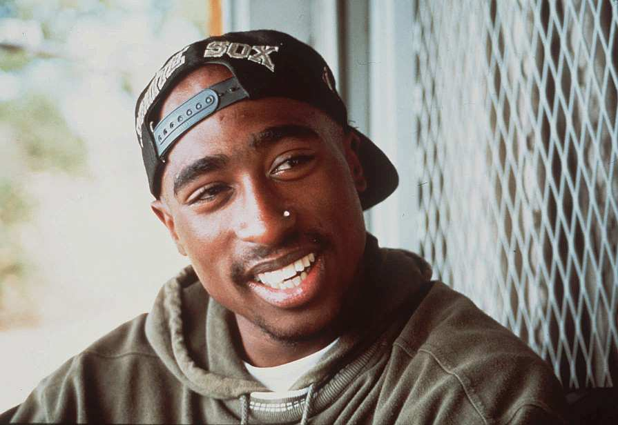
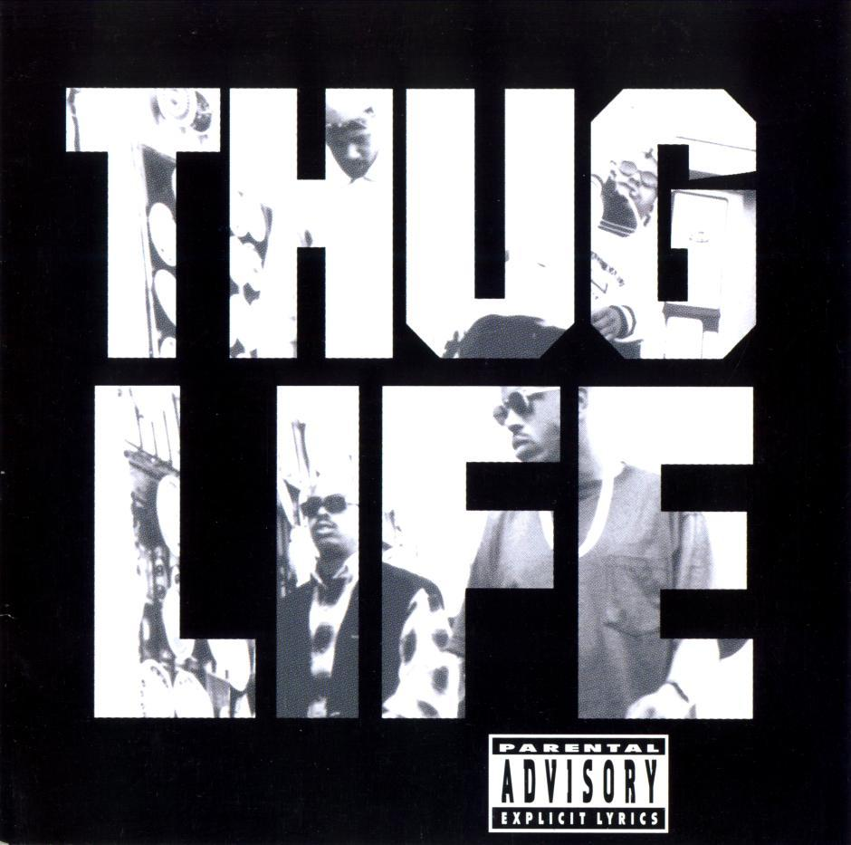

Tupac Sharkur


Per altre info
Torna all'indice
Storia
Tupac Amaru Shakur, conosciuto come Tupac Shakur, Tupac, 2Pac, Pac, MC New York, The Don Killuminati e Makaveli (New York, 16 giugno 1971 – Las Vegas, 13 settembre 1996), e' stato un rapper, attivista, poeta e attore statunitense. Artista Rap di grande successo, e' considerato uno dei rapper piu' influenti degli anni '90, nonostante la breve carriera e la triste scomparsa a soli venticinque anni. E' morto sette giorni dopo che a Las Vegas venne raggiunto da cinque proiettili sparati da un'auto in corsa. La tragica fine sara' seguita da un'altrettanto misteriosa morte: quella di Notorious B.I.G.. Queste due scomparse hanno segnato un profondo lutto nella storia del Rap.
Tupac ha pubblicato un totale di 24 album, di cui dodici in studio, due dischi dal vivo e dieci raccolte (tutte postume). Molte sue canzoni sono incentrate sulla vita difficile nel ghetto, sul razzismo e l'emarginazione sociale, sull'abuso di potere da parte delle forze dell'ordine, sulla corruzione delle istituzioni e anche sugli scontri con altri rapper (in riferimento soprattutto alla celebre faida hip hop tra East Coast e West Coast), sull'abuso di alcol, droga, sulla prostituzione e sulla violenza tra le gang di strada. Ha venduto piu' di 75 milioni di album, la maggior parte dei quali post mortem, risultando uno dei piu' influenti artisti rap di ogni tempo.
Il suo atteggiamento, sia fuori che dentro la musica, le sue idee e l'impegno che metteva in ogni cosa, hanno fatto si che Tupac fosse considerato uno dei più grandi punti di riferimento per la Black America, e il suo successo deriva dai suoi testi, considerati da molti amanti del genere vere e proprie poesie, i beat sempre incalzanti e grintosi, ma soprattutto da quella voglia di cambiamento in una società che sopprimeva le richieste dei più poveri e per tutte le persone che cercano di sfondare nel mondo dell'Hip hop, Tupac e' considerato un vero e proprio maestro, un'icona di riferimento da cui prendere spunto.
Thug Life: Volume 1
Thug Life: Volume 1 (o anche scritto Thug Life: Vol. 1) e' il primo album di debutto del gruppo Thug Life, creato dal rapper 2Pac, prima di finire in galera, con l'obiettivo di trovare giovani aspiranti rappers ed aiutarli ad esporsi nella scena rap. L'album fu inizialmente rilasciato dalla sua stessa etichetta Out Da Gutta Records e vanta la collaborazione di Nate Dogg nella canzone "How Long Will They Mourn Me?". Nel 1996 Big Syke e Tupac avevano in progetto di comporre Thug Life: Vol. 2 sotto l'etichetta discografica Makaveli Records.
L'album contiene soltanto 10 tracce, poiche' molte furono oggetto di controversia con la Interscope Records per le numerose critiche al Gangsta rap. Le tematiche principali dell'album sono la vita difficile nel ghetto, droga e la vita difficile Gangsta. La canzone "How Long will they mourn me?" verra' poi inserita nella Greatest Hits del 1998. Kato, uno dei membri di THUG LIFE muore prima delle registrazione del album, in una sparatoria e il gruppo per ricordarlo gli dedica varie canzoni del album.

Me Against the World
Me Against the World e' il terzo album del rapper statunitense Tupac Shakur, pubblicato il 27 febbraio 1995, venne registrato durante il suo ricovero dopo l'agguato subito nel novembre 1994, mentre veniva pubblicato quando si trovava in carcere per violenza sessuale. L'album, quando Tupac era ancora in prigione, balzo' in Top numero 1 superando artisti del calibro di Bruce Springsteen e Eagles.